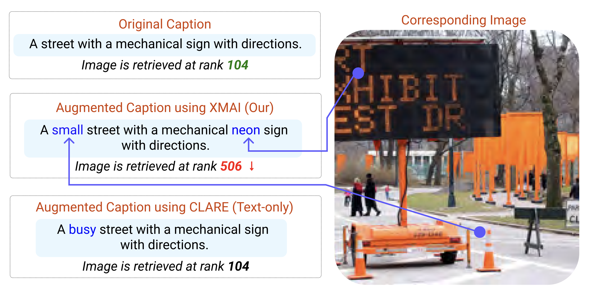
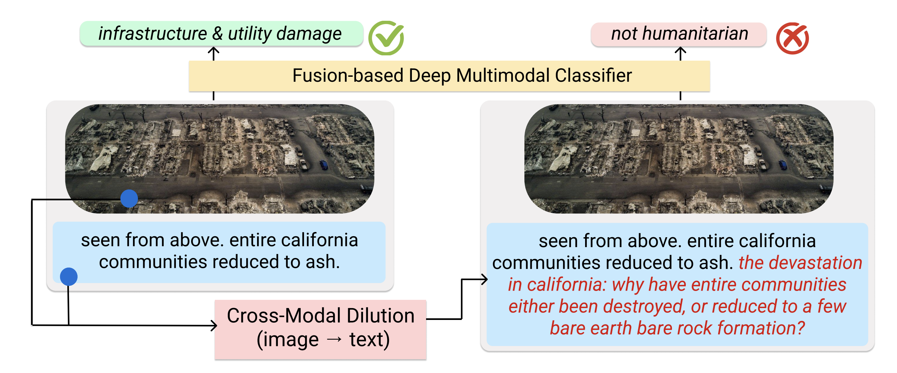

Multimodal Large Language Models (MLLMs) allow language-based reasoning over other modalities, which is predominantly images right now but will very soon include videos and even sensor data. Recently, there has been a lot of interest in understanding the robustness of LLMs–the major backbone of multimodal LLMs–to variations in the input data – ranging from unintended changes (Sclar et al., 2023) to adversarial ones (Zou et al., 2023). In the same spirit, we conduct robustness evaluations on the zero-shot capabilities of multimodal LLMs to plausible changes in the input text.SummaryFigure 1: Examples of cross-modal dilution and cross-modal insertion. Introducing variations in the text by relying on the information in the corresponding image modality (i.e., cross-modal grounding) ensures that the variations are realistic. The outputs for original and modified multimodal inputs should be the same. We find that propreitary MLLMs like GPT-4(V), Claude 3 Opus, and Gemini Pro demonstrate pretty good robustness, with the latter two being slightly more robust than GPT-4(V). The robustness of propreitary MLLMs is way better than that of a fully fine-tuned fusion-based multimodal model, which is impressive. With regard to the dependence on the type of variations, we notice that: (a) dilutions almost always hurt performance, (b) while insertions improve the results, which could hint at a good data augmentation strategy for enabling more accurate fine-tuning, and (c) a combination of dilution and insertion hurts the MLLM performance, which we believe is largely driven by the effect of dilution. However, the zero-shot classification abilities of these models is subpar to the fusion-based multimodal classifier. This brings us to current landscape that indicates a trade-off between accuracy and robustness: MLLMs achieve subpar zero-shot classification performance, while their robustness is notably better. Finally, it is worth noting that these benefits of better robustness are not reflected in LLaVA-1.5, a leading open-source MLLM. LLaVA-1.5 achieves notably lower classification performance while also doing worse on robustness in comparison to the fine-tuned fusion-based classifier.
Results Table: The table shows the classification performance (macro F1 score) of the models on the original data, and the percentage change in performance due to dilution, insertion, and dilution + insertion. The failure rate is the percentage of instances where the model refuses to answer or answers in an unparsable format. The last column contains the results for all the classes. Click on view image to see the expanded set of results in a different tab. Lastly, it is worth emphasizing that while the robustness of propreitary MLLM-based zero-shot classifiers is pretty good in comparison to the fusion-based mutimodal classifier, there is work that needs to be done to achieve robustness that affords a "three 9s"-level of robustness in multimodal systems. Continue reading for more technical details and qualitative examples of instances for which GPT-4(V) falters... and ... stay tuned for more multimodal tasks and model variants (like fine-tuned MLLMs)! Technical Details
Given the image and the accompanying textual description, assign one of the five labels based on the information conveyed jointly by the image and the text: {labels_string}. The definitions of the labels are provided below.Experimental setup for testing robustness: So, sure, the above describes how the models classify. But since the primary aim is to test their robust to dilutions and insertions, we need variants of original {text} above that include these dilutions and insertions. We rely on prompting GPT-4(V) to generate these variants. Here's how we prompt the GPT-4(V) model to introduce these variations:
Introducing dilutions:
Once we have these dilutions, insertions, and dilutions + insertions, we plug them in place of
Given the image and the accompanying textual description, generate new text that follows the following constraints: the new text (i) should be relevant to the given image, (ii) should be relevant to the provided textual descriptiton, and (iii), when appended to the textual description, the combined text should be fluent and natural. The goal of generating the new text is to dilute the information conveyed by the image and text data, under realistic settings of relevancy and fluency. Generate about 2 sentences as new text.Introducing insertions:
You are an agent that inserts new words into the provided textual description while ensuring that the inserted words are strictly related to the attributes of objects in the provided image. The attributes could include properties like color, shape, size, etc. The inserted attributes should be included without modifying the content of the original textual description. Only insert the attributes that you are confident about based on the image and textual description. Output the new text that includes the inserted attributes. It is important that you do not add new sentences and only insert words in the original textual description.Introducing dilutions + insertions: For this, we combine the dilution generated by GPT-4(V) with the original text and then prompt the model to introduce insertions using the same prompt as the one above to introduce insertions in the original + dilution text. {text} in the classification prompt and evaluate the models on the new data. Evaluation involves quantifying the performance of the model on the original data, for which we use macro-averaged F1 scores. We also quantify the failure rate, which is the percentage of instances where the model refuses to answer or answers in an unparsable format. And most importantly, we quantify the percentage change in macro F1 due to dilution, insertion, and dilution + insertion. Now, certainly, it is important to check whether GPT-4(V) generates good dilutions and insertions – can we rely on these generations for our robustness assessments? We did some qualitative checks and consider them to be really good. Here's the complete TSV that shows the original text, and the generated dilution, insertion, and dilution + insertion; take a look! As a side note, we have proposed our own approaches to generate these dilutions and insertions while ensuring cross-modal grounding, and human evaluations suggest that these automated variations are indeed realistic. What kind of cross-modal variations confuse GPT-4(V)?On introducing dilutions: Looking back at the definitions of these categories, which were made available in the prompt, the classifications made by GPT-4(V) on diluting the original text do not make a lot of sense.
On introducing insertions: Overall, GPT-4(V) demonstrates slightly better performances when relevant insertions are made from the image to the text. However, there are still some examples where insertions cause incorrect predcitions.
On introducing both dilutions and insertions: Similar to the examples above, the GPT-4(V) predictions change incorrectly after the changes have been introduced in the text. At an aggregate level, given that dilutions lead to a drop in performance while insertions boost the performance, it seems that the drop in introducing dilutions + insertions could be largely attributed to the dilutions. The example on the right below illustrates this.
|
|
Data: You can download the CrisisMMD dataset here. We use the standard train/dev/test split. Code: All the code resides in this GitHub repository. This includes the code for generating dilutions and insertions using GPT-4(V) and evaluating the multimodal LLMs. The code for training the fusion-based multimodal classifier si also available. Finally, the generated dilutions and insertions are available in this TSV. Please feel free to reach out to us if you have any questions or comments. We ran the generation and inference experiments with GPT-4(V) in the second half of January 2024. The inference experiments with Gemini Pro were done in February 2024. The inference experiments with Claude 3 Opus were done in March 2024. |
|  |
Cross-Modal Attribute Insertions for Assessing the Robustness of Vision-and-Language Learning Shivaen Ramshetty*, Gaurav Verma*, Srijan Kumar In Proceedings of the 61st Annual Meeting of the Association for Computational Linguistics (ACL 2023). code: https://github.com/claws-lab/multimodal-robustness-xmai arXiv: https://arxiv.org/abs/2306.11065 |
|  |
Robustness of Fusion-based Multimodal Classifiers to Cross-Modal Content Dilutions Gaurav Verma, Vishwa Vinay, Ryan A. Rossi, Srijan Kumar In Proceedings of the 2022 Conference on Empirical Methods in Natural Language Processing (EMNLP 2022). webpage: https://claws-lab.github.io/multimodal-robustness/ code: https://github.com/claws-lab/multimodal-robustness arXiv: https://arxiv.org/abs/2211.02646 |